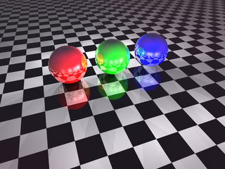
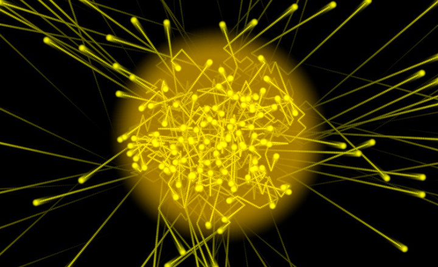

Ray Tracing
El raytracing o trazado de rayos es un algoritmo para síntesis de imágenes tridimensionales.
Propuesto inicialmente por Turner Whitted en 1980, está basado en el algoritmo de determinación
de superficies visibles de Arthur Appel denominado Ray Casting (1968).
En el algoritmo Ray Casting se determinan las superficies visibles en la escena que se
quiere sintetizar trazando rayos desde el observador (cámara) hasta la escena a través del
plano de la imagen. Se calculan las intersecciones del rayo con los diferentes objetos de
la escena y aquella intersección que esté más cerca del observador determina cuál es el objeto
visible.
Contenido
Reflexion y refraccion
Para simular los efectos de reflexión y refracción se trazan rayos recursivamente desde el punto
de intersección que se está sombreando dependiendo de las características del material del
objeto intersecado. Para simular las sombras arrojadas se lanzan rayos desde el punto de intersección
hasta las fuentes de luz. Estos rayos se conocen con el nombre de rayos de sombra (shadow rays).

Algoritmo de Trazado de Rayos
El algoritmo básico de trazado de rayos fue mejorado por Robert Cook (1985) para simular otros
efectos en las imágenes mediante el muestreo estocástico usando un método de Montecarlo; entre
estos efectos podemos citar el desenfoque de movimiento, la profundidad de campo o el
submuestreo para eliminar efectos de dientes de sierra o aliasing en la imagen resultante.
En la actualidad, el algoritmo de trazado de rayos es la base de otros algoritmos más complejos
para síntesis de imágenes (mapeado de fotones, Metropolis, entre otros) que son capaces de
simular efectos de iluminación global complejos como la mezcla de colores (color blending)
o las cáusticas.

Fotones de Luz
El Ray Tracing (como lo llaman NVIDIA y AMD) o el Raytracing (como lo llama Microsoft), o en
cristiano, el Trazado de Rayos, es un intento de simular cómo ven nuestros ojos la realidad.
Aunque nosotros veamos objetos y texturas de millones de colores y matices, lo que en realidad
estamos viendo es... luz. Más concretamente, fotones de luz. Cuando ponemos una manzana de color
rojo ante nuestros ojos...¿por qué es roja y no morada, por ejemplo? Porque la manzana
absorbe todo el espectro de color de la luz que recibe, menos el color rojo, y ese color
que se refleja en forma de fotones de luz es el que llega hasta nuestros ojos.
